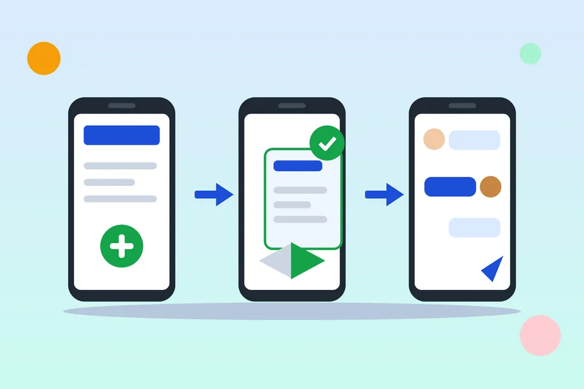

StudyMatch
Filters
Subject (course)
Place
Format
Any format
In person
Online
Only subjects from my profile
Show skipped requests again
How it works
Skip
Undo
Accept
How StudyMatch works

SKIP
Physics - Tue 16:00
ACCEPT
Create a request with the subject, time, length and place.
Swipe right on a request to accept it, or left to skip it.
Write to your partner on Telegram and study together.
Got it